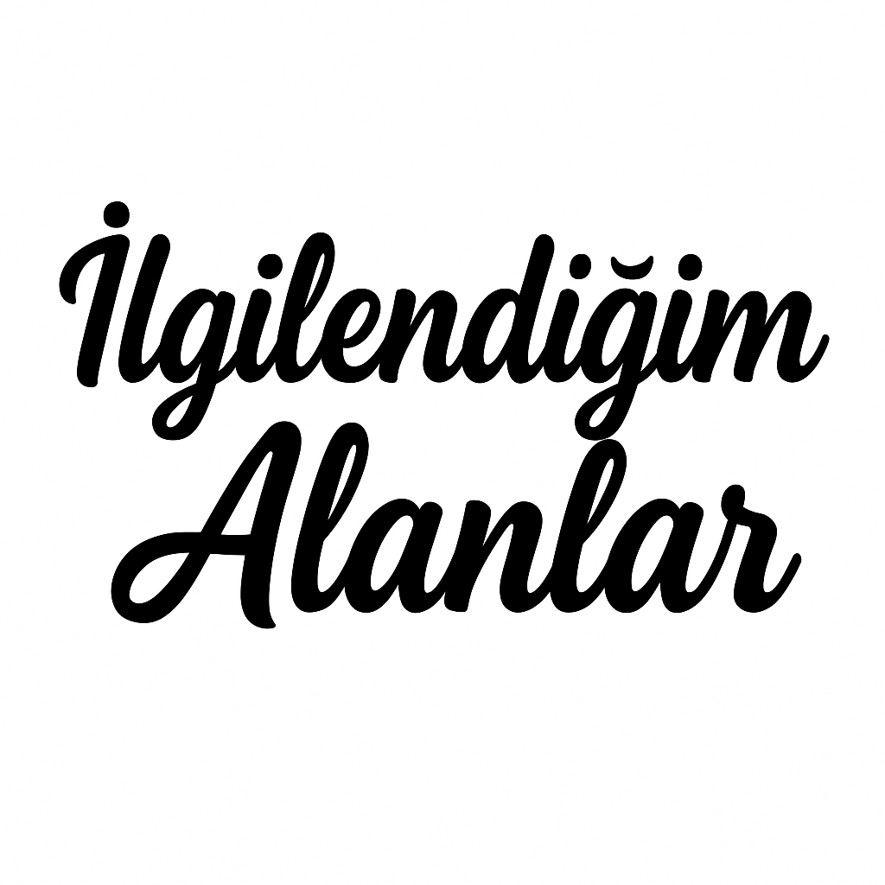
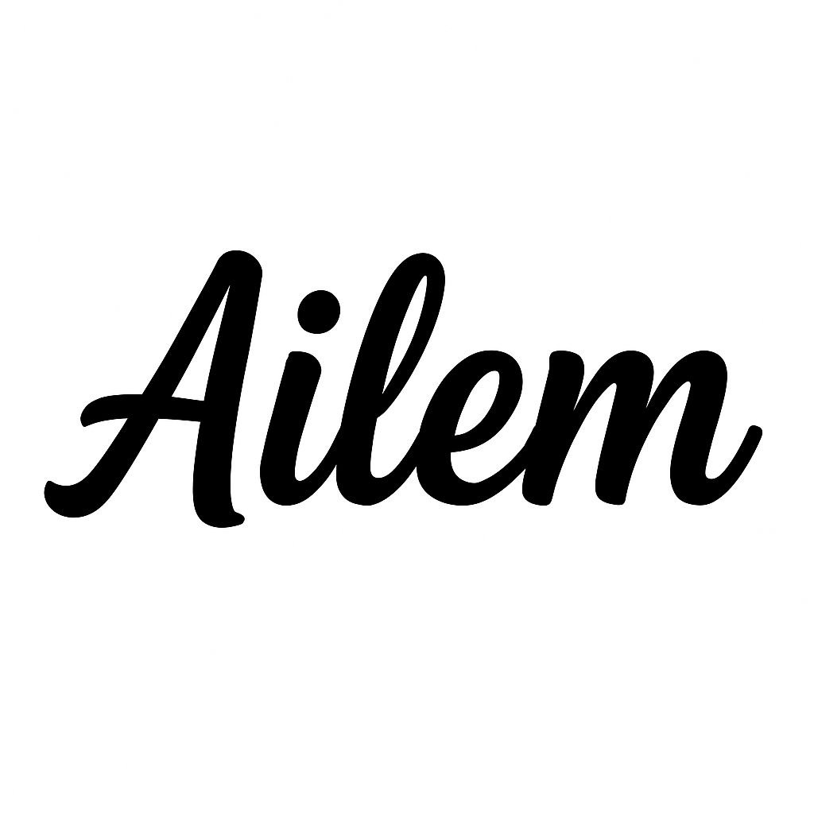

𝐁𝐞𝐧𝐢𝐦 𝐇𝐚𝐤𝐤ı𝐦𝐝𝐚𝐤𝐢𝐥𝐞𝐫:
Merhabalar ben Ali Haydar AYDIN. Hatayın Samandağ ilçesinde doğdum büyüdüm. İlköğretimimi Hatayda Sakarya İlköretim okulunda okudum. Ortaokul sonda Alanyaya taşındık. 8. sınıfı ve liseyi Alanyada okudum. Üniversite sınavına girdiğimde Akdeniz Üniversitesi Bilgisayar Programcılığı bölümümü kazandım . Şuan üniversitemin 1. yılındayım. Bu bölümü seçmemin sebebi küçüklükten beri bilgisayara olan ilgimdi. Öğretmenim Erokan CANBAZOĞLU´nun bana kattığı şeylerle web sitesi kurmayı öğrendim. Öğrendiğim bilgiler doğrultusunda iş yapmak istiyorum. Deneyimlerimi sizinle paylaşmaktan mutluluk duyarım . Eğer web sitesine ihtyacınız varsa benimle İLETİŞİM bölümünden irtibat kurabilirsiniz ya da anasayfamdaki size ulaşmam için olan bölüme numaranızı yazarsanız size dönüş sağlarım. Okuduğum bölümü bitirdikten sonra DGS sınavına girip Bilgisayar Mühendiliğine veya Yapay Zeka bölümüne yönelmeyi düşünüyorum. Onların yanı sıra kendimi ilerletip yurt dışında çalışmayı hedefliyorum. Tabi ki bunun için web sitesi yapmaktan,kod yazamaktan başka yabancı dilimi de geliştirmeye çalışıyorum. İngilize,Rusça,Arapça dillerini belirli bir seviyede biliyorum. Şuan ispanyolca öğrenmeye çalışıyorum.

𝗜̇𝗟𝗚𝗜̇ 𝗔𝗟𝗔𝗡𝗟𝗔𝗥𝗜𝗠
Küçülükten beri futbol oynamayı ve izlemeyi çok severim. Türkiye'de desteklediğim tek takım FENERBAHÇE'dir. Diğer ligleri de takip eder ve izlerim.Eğer merak ederseniz bu kadar futbol izleyen seven birinin idolü kimm ? Tabiki de CRİSTİANO RONALDO. Futbol hariç arkadaşlarımla vakit geçirmeyi de çok severim. Onlarla okey oynamak,tavla oynamak,basketbol oynamak en sevdiğim aktivitelerimdendir.
𝗬𝗘𝗧𝗘𝗡𝗘𝗞𝗟𝗘𝗥𝗜̇𝗠
Aslında pek yeteneğim yok ama iyi futbol iyi basketbol oyanrım . Yetenek olmasada o konularda iyiyim . Tahmin konusunda da iyiyimdir mesela 1 Aralık Pazartesi günü oyananacak Galatasaray - Fenerbahçe derbisindi galip tarafın Fenerbahçe olacağını düşünüyorum ,skor tahminim FENERBAHÇE 2-0 galatasaray.

𝗔𝗶𝗹𝗲𝗺
Ben çekirdek bir ailede büyüdüm. Annem,babam,ablam ve ben. Babam biz küçükken dönercilik yapıyordu ama şuan babamın şuan 2 tane dükkanı var . Biri döner ve ızgara dükkanı diğeri beach resturant. Annem ise ev hanımı . Ablam İstinye Üniversitesi Tıp 1. sınıfta okuyor. Ben de bildiğiniz gibi Akdeniz Üniversitesi Bilgisayar Programcılığı 1. sınıfım.
| AD | "SINIF | OKUL |
|---|---|---|
| Ali Haydar AYDIN | 1,2,3,4 | SAKARYA İLKÖĞRETİM OKULU /HATAY |
| Ali Haydar AYDIN | 5,6,7 | ŞABAN KAHİL ORTAOKULU /HATAY |
| Ali Haydar AYDIN | 8 | TAHİR TULUK ORTAOKULU /ALANYA |
| Ali Haydar AYDIN | 9,10,11,12 | ALANYA ŞEHİT ABDULLAH ÜMİT SERCAN ANADOLU LİSESİ /ALANYA |